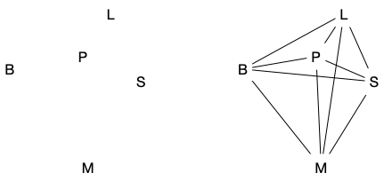
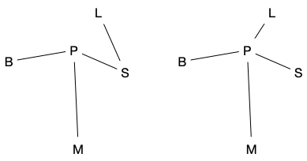

étude : chemins et cycles
Utilisation d'algorithmes gloutons pour résoudre des problèmes de cheminement.
Les différents algorithmes que nous allons voir sont pour la plupart des cas particuliers d'algorithmes plus généraux de la théorie des graphes.
Les algorithmes présentés sont de plus pas forcément les meilleurs en terme de complexité.
Le problème que nous voulons résoudre est : étant donné un ensemble de villes $V$ décrites par leurs coordonnées GPS et un prix de construction de route proportionnelle au kilomètre comment relier les villes entres-elle au prix le plus bas ?
Par exemple les 5 villes ci-dessous :

Dans le cas de gauche aucune route n'a été construite et on ne peut voyage d'une route à l'autre et dans le cas de droite on a construit toutes les routes possibles, ce qui est pratiques si ont veut voyager vite entre deux villes mais c'est beaucoup trop cher (et dangereux, regardez le nombre de croisements !). On peut s'en sortir en construisant moins de routes comme le montre les 2 exemples ci-dessous :

Nuages de points
python 100 villes au pif. prendre des valeurs de gps en en France.
On suppose que pas en ligne droite (position générale). proba nulle que ça arrive de toute façon et si ça arrive on décale d'un pouillème
ceci dit que si route directe entre x et y pas de route z au milieu
code python qui génère pus dessin
Connexité
chemin : suite de routes en ligne droite de x à y
cycles : suite de routes en ligne droite de x à x
exemple sur le précédent
composante connexe : ensemble de villes telle que je peux aller de l'une à l'autre.
symétrique (route à double sens)
transitif
relation d'équivalence pour R : ligne droite entre x et y
aller d
xRy : route entre x et y
transitive
connexité : classe d'équivalences
algo composantes connexes: liste de routes et couleurs aux composantes.
si couleur différentes on rassemble
sinon on ne fait rien
xy et xz => yz
algo si connexe :
il existe un chemin et connexité
< n-1 impossible et = n-1 ok
on appelle ça un arbre
Arbres
connexe minimal :
- supprime une route déconnecte
- connexe et Pas de cycle
- connexe et n-1 routes
supprime une route : 2 parties connexes minimales
il existe un élément avec 1 seule route d'accès
- un chemin ok : toutes les routes
algo :
- juste plus proche ou k-plus proche marche pas forcement. il faut
- tant que pas connexe on continue ( Kruskal)
- pas de croisements d'arêtes
- ajouter au plus proche de ceux qu'on a déjà (prim) : ne pas faire laisser en info.
Chemins
trouver le chemin avec largeur (gloutons like) et profondeur (backtracking) sur un arbre
algo : marquage pour optimalité
python : dict et ensemble pour efficacité (complexité en moyenne)
on peut partir d'un point pour tout connaître. algo prédécesseur
cycles
si route unique alors soucis si manif ou tremblement de terre
problème
cercle : voyageur de commerce
glouton
glouton pas optimal
Et aucun de connu. C'est un problème NP-difficile.
1 cycle ok, le plus petit dur.
principe du 2-opt (ils auront à le coder dans le projet)
algo à performances garanties
2x arbres
christofides
les cycles se combinent entre eux comme la connexité @ cycles qui se touchent forment un gros cycle
On prend pas tout sinon trop donc on ajoute juste ce qu'il faut à un arbre
si pair => cycles. Donc ajouter 1 arêtes à ceux qui sont impair.